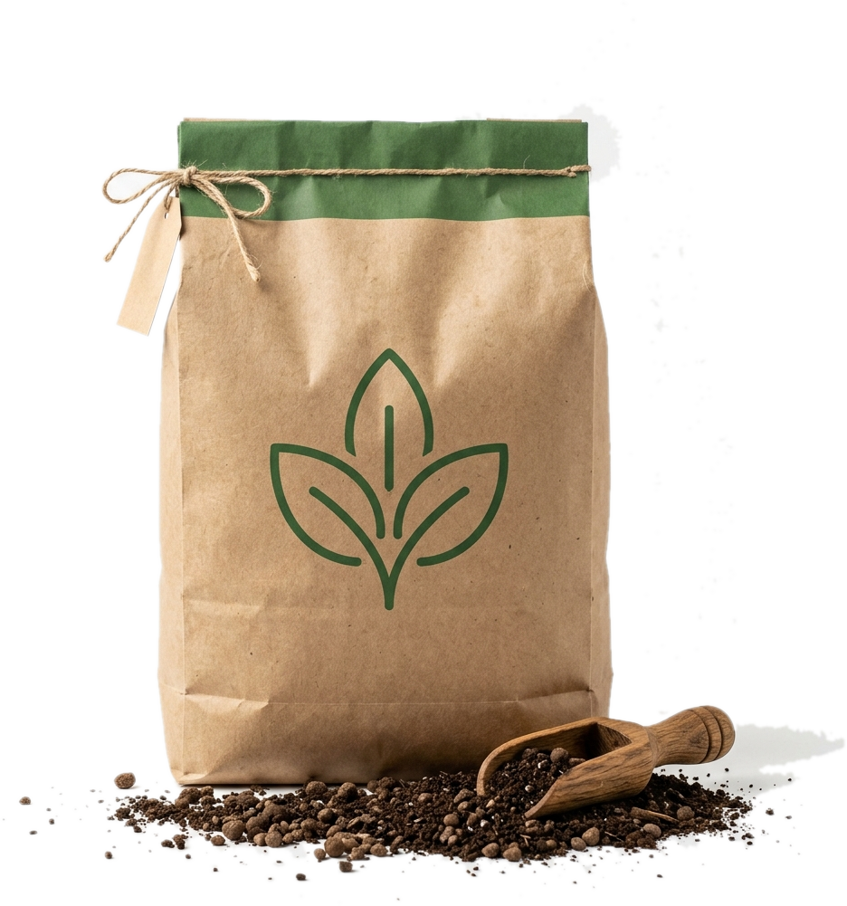

Vườn chú Nguyễn Hoàng Mai · Ấp 4, xã Bình Mỹ

Phòng khi ảnh chưa rõ chữ hoặc mình đã trộn sẵn phân ở nhà rồi mới đem ra vườn bón:
Đưa mặt lưng điện thoại lại gần thẻ chip NFC gắn trên thân cây tiếp theo để mở sổ chăm sóc.